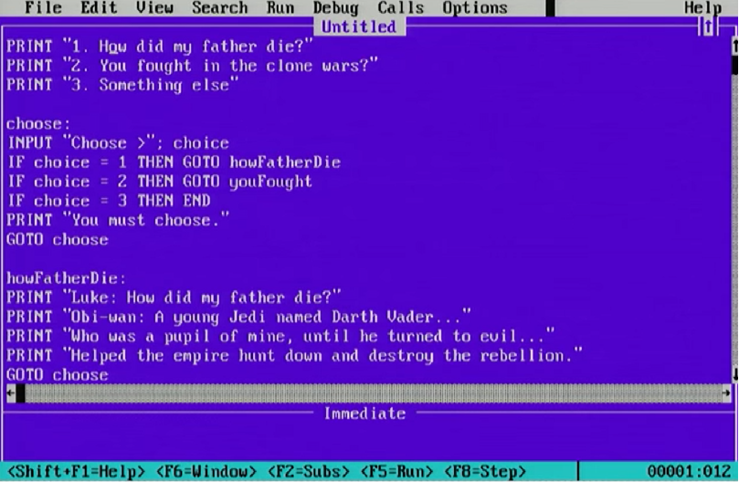

the environment data structure
the functional version of the environment data structure
a simple pattern matching macro compatible with R5RS
the minimal implementation of miniKanren
我记不起第多少次想要转发一下王垠的微博(这也是我唯一使用微博的目的,看看王垠的谬论) ,顺便在底下评一个王垠很可能会看一看的评论,或很有可能不看,每次我都会卡在登录页面上, 然后作罢,有时甚至写了半个小时以上,但我从来没有成功转发过他的微博.我对于 很多账号和手机挂钩的方式感到反感,因为我到现在都不适应手机这个东西,我只是把手机当 作PDA而已,而且近来我已经几乎不这么做了,使用电脑的效率要比使用手机高很多.我从来没 主动用手机给别人打过电话,发过短信,等等,只是因为某些强制的原因,我不得不使用QQ和微信, 但我从来没有在朋友圈里发过任何消息,我有些怀念我的高中生活了,那时我完全不使用QQ和微 信,甚至是现在常用的bilibili那时我也很少使用,那时我使用手机(偷偷地)的唯一用途就 是阅读txt,epub,pdf文件,然后伴随着周期性的使用模拟器的游戏史研究计划.这个社会完全 没有给人选择的权利,我讨厌手机,QQ,微信这些东西,但我被莫名奇妙地绑架着使用它们.
对话树一般来说并不形成树，常常形成图，因而对话脚本的写作方式类似于汇编语言而多用label与goto。 （未完待续）

我曾经和王垠有过浅薄的交流，感觉非常差，当时还有几个人与王垠同时谈论着一些话题。之所以我的感觉很差， 后来我发现，原来是因为王垠总是预先地准备话题，预先地打好草稿，一旦你偏离他的剧本，他就要想方设法纠正 过来，这种习惯估计王垠自己并没有发觉，他自以为自己素质很高，很幽默，很懂生活，很懂数学，更懂计算机科学， 以至于我发现没有人在与王垠交流时可以得到尊重，因为王垠一定会觉得对方并没有尊重自己， 比方说有人问延续是什么的时候，他就故意地要别人说一说话，然后发一句，这样交流比看书看论文要来得快多了 容易多了，以佐证自己一直以来的观点，可是我不知道他说这种话对于探讨延续的概念有什么意义，是的，这种话 也许是对的，但不是有用的，如果你的身边天天有人作一般论，你一定会觉得那个人是个傻逼而不是任何其他的东西。 当王垠准备和别人讨论自然数时，他们去攻击Peano公理多么的无趣、繁琐、反直观，是的，我在某种程度上和这种 论点有共通之处，我曾经翻过Landau的分析基础，读了一页纸我就睡着了，我无法想象有人能看得下去这样的书， 但我觉得王垠在攻击这些无聊的东西时并没有攻击重点，而且感觉还被形式所迷惑，后来他似乎称赞Coq等等的东西， 又做着数学符号太垃圾的老生常谈，让我怀疑他是不是没有学过微积分，还有基本的代数学，他听闻同伦类型论觉得 它比集合论好的时候我真的笑了，这时我就知道王垠的数学素养停留在接受过高中教育的水平，以至于后来他称范畴 论是胡说八道时我内心没有任何波澜，一个不熟悉数学的丰富的对象的人当然会觉得范畴论是胡说八道，因为对于他 而言这种语言是没有必要的，连了解的价值都没有，就像你买菜不需要用微积分一样，那你觉得称买菜需要微积分的 人是胡说八道是对的，但问题在于王垠在这种情况下就像是觉得微积分是胡说八道。王垠根本就没有接触过现代分析学， 虽然加上现代两个字一点意义都没有，就像给代数之前加抽象或近世一样，以至于他总是攻击自己在高等数学里学习到 的微积分符号使用问题，我觉得很没道理，因为微积分的符号使用在上个世纪的进步很大。说了这么多不成组织的话， 王垠一定觉得我又是一个没文化的无聊人物，这我得承认，而且如果比PL我肯定也比不过，因为我编程才自学了一年多， 但王垠啊，你那么在意别人如何评价自己有什么意义呢？别人对自己的评价有那么重要么？你二十年前或许有天才的潜 力，但现在并没有成为天才，世人意义下的天才对你来说就那么重要吗？我看你怀疑智商，但其实冯诺依曼比你想象的 计算速度还要快很多很多，而且是对于很多开放性问题也是如此，你为什么不怀疑一下自己的计算能力有多差呢？你自 己想要写书，但你写出来了吗？你自己试着用你的符号写写微积分书籍，看看能不能写的下去，我十分怀疑，因为不懂 微积分的人换个符号也写不出微积分来。其实我本来也很爱打磨证明，后来发现那不过是裁缝做的事情，徒然浪费时间。 好吧，说着说着又偏题了。王垠，其实我就想向你提一些忠告，钱挣着了是好事，躺着挣钱更是好事，有了钱，你完全 可以继续自己的研究，不要老是发牢骚，发表一般论，像个公知/网红一样，像你说过于沉迷社交媒体，这肯定是你自己 的写照，不然你也不可能会发这种微博，可能你无法想象一个不用微信|QQ|微博（微博除了看你之外别无他用），一年 用手机打别人电话平均下来一年一次都没有，从来不发短信给别人的人是什么样的。至于我为什么要如此无聊的说一说自 己的看法，可能是因为我和你很像罢了，因而作此文为大家笑。
很久以前,我就已经知道忘记历史者的可悲之处,实际上,这往往也不是这些人的错.
一种教育,特别是急于证明其比旧教育优越的教育,往往带来历史上的清洗,王垠就是这种
教育的受害者.最近,他竟然做出了今日中国人鲜有人知鲁迅的论断,我实在无法理解,而
且王垠其实不理解鲁迅在日本的研究情况,特别是这种研究的历史,如果王垠翻看过竹内好
的对于鲁迅的研究,就不难发现竹内好在战前和战后的鲜明变化,而且,竹内好还是很有代
表性的研究者,即使他也不能反映所有人的情况,但在他的带头作用下,日本的鲁迅研究和
中国有很大的差异.鲁迅在日本的影响力是很大的,但是其实日本年轻一代对于中国的了解
已经比他们的前辈来的要差许多了,我片面地以为这其实是对的,就像我们的语文课本里不
可能塞进去芥川龙之介,森鸥外,夏目漱石,太宰治等人的文章一样(这是我上学的时候,虽然
我觉得以后也可能会改变),不可能强迫学生读古代的日本书籍,如源氏物语,古事记,和歌集
,万叶集这样的东西等等.总的来说,中日本应该有很好的交流基础,但是这种基础似乎越来
越不牢靠了,我觉得这和中日两国的历史和语文教育都有点关系.但当然,王垠的这个论断是
极端可笑的,因为中国无人不读鲁迅,虽不知以后如何.我不知道接受了怎样的历史和语文教
育可以让王垠产生这种错觉,但从最近王垠各种民粹主义的发言来看,我觉得这应该是他自己
的问题,他似乎从来都不在乎历史,以为历史就是可以像95%都是好人一样可以随口胡诌,以至
任意地颠倒是非,以支持自己的观点.
不知道为什么，人们总觉得递归的效率一定比迭代的效率来得低，
这种误解虽然可以理解，但却是全然错误的想法。让我们先来检视一个
熟悉的求最大公因数的过程，它的定义如下：
(define (gcd a b)
(if (= b 0)
a
(gcd b (remainder a b))))
它似乎是递归的，因为过程的体里调用了自身，但实际上它产生的却是
迭代的计算行为。稍不严谨地追踪一次这个过程的调用，如(gcd 27 18)，
我们可以看到：
(gcd 27 18)
= (gcd 18 9)
= (gcd 9 0)
= 9
让我们再看一个熟悉的求阶乘的过程，它的定义如下：
(define (fact n)
(if (= n 0)
1
(* n (fact (- n 1)))))
与上文类似地，让我们追踪一次这个过程的调用，如(fact 3)，我们
可以看到：
(fact 3)
= (* 3 (fact 2))
= (* 3 (* 2 (fact 1)))
= (* 3 (* 2 (* 1 (fact 0))))
= (* 3 (* 2 (* 1 1)))
= (* 3 (* 2 1))
= (* 3 2)
= 6
直觉上，我们也可以看出gcd和fact产生的计算过程似乎有着某种差异，
因为(fact 3)的求值过程中，计算似乎是先“膨胀”然后“收缩”的。而且，
从直觉上看，随着输入的n的增长，(fact n)的求值过程中计算的“膨胀”
也会增长，这就与gcd过程产生了对比，我们把这种计算行为称为递归的，
这里采用递归一词，与常见的含义并不相同，但其实倒抓住了一般人对于
递归过程产生的计算行为的想象。
是什么造成了这种误解呢？如果我们做一下CPS变换，事情会变得清楚
一些。
(define (gcd a b k)
(if (= b 0)
(k a)
(gcd b (remainder a b) k)))
(define (fact n k)
(if (= n 0)
(k 1)
(fact (- n 1)
(lambda (v) (k (* n v))))))
我们可以清楚地看到，在gcd的求值过程中，延续保持不变，而fact的
求值过程中，延续则是不断增长的。那为什么人们觉得递归比迭代低效
呢？这是因为许多编译器没能正确地进行尾递归消除，尾递归消除实际
上不是一种优化，而是一种必须要做的事情。如果不进行尾递归优化，
gcd实际上会变成类似于如下形式的过程：
(define (gcd a b k)
(if (= b 0)
(k a)
(gcd b (remainder a b) (lambda (v) (k v)))))
我们可以清楚地看到，在这种gcd过程的求值过程中，延续是会增长的，
这或许就是递归比迭代效率低的误解的根源吧。